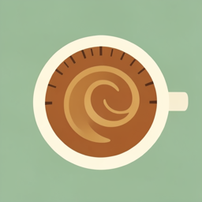

DialedSomeone shared coffee equipment with you.
Coffee equipment
Open it in Dialed to add it to your equipment. Don't have the app yet? Get it first, then scan the QR code again.

DialedSomeone shared coffee equipment with you.
Open it in Dialed to add it to your equipment. Don't have the app yet? Get it first, then scan the QR code again.